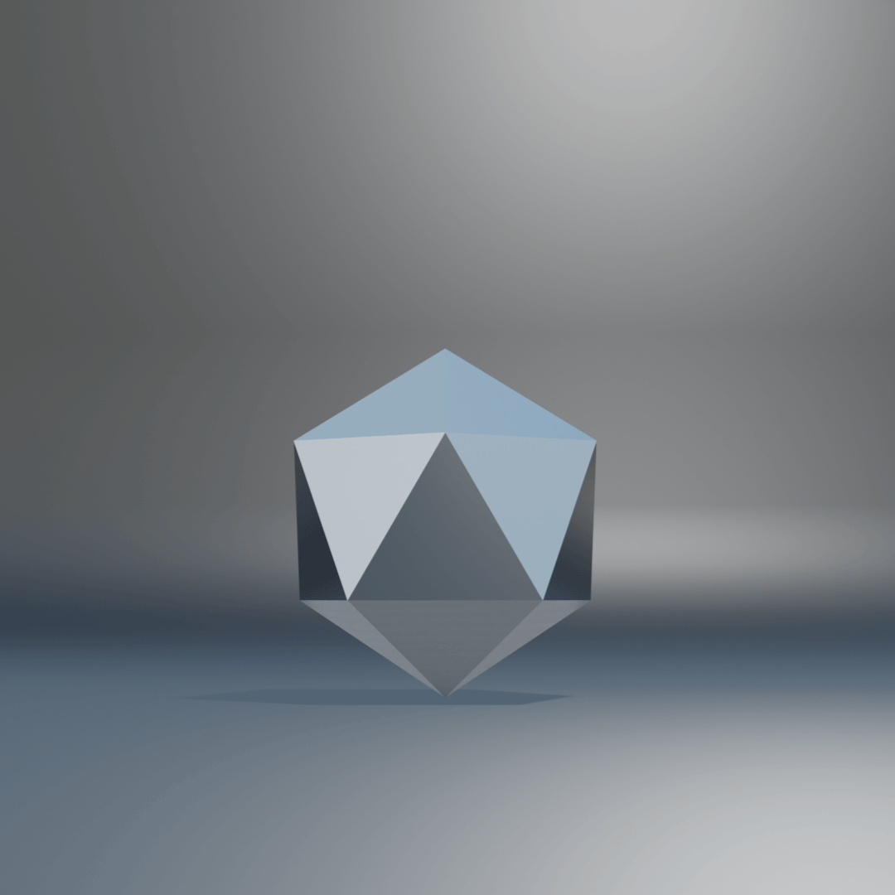
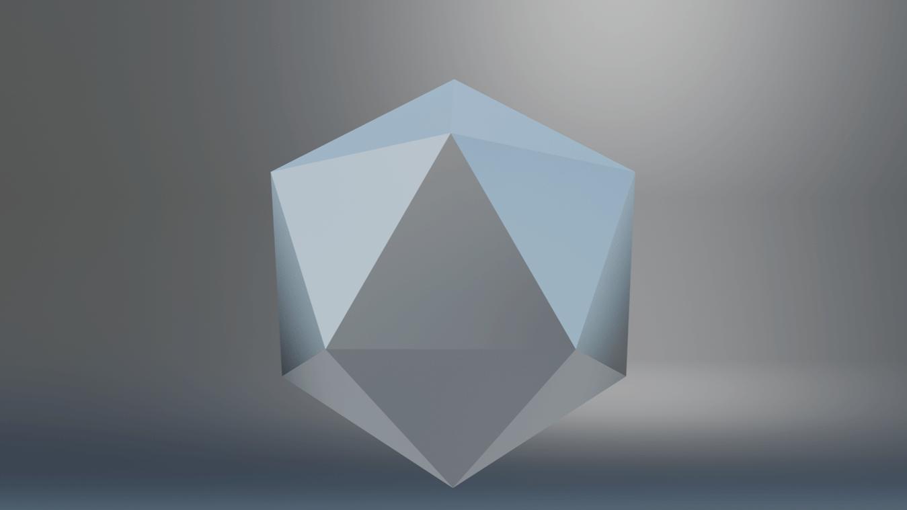

OYSTER PREMIUM PLATON IV IN EDELSTAHL OYSTERSTEEL. 20 KONGRUENTE GLEICHSEITIGE DREIECKE MIT GLEICH LANGEN KANTEN ZUSAMMENTREFFEND IN 12 ECKPUNKTEN.
Er wurde dank seiner Form, des äußerst widerstandsfähigen Edelstahl Oystersteel und seines Designs zu einem Ikosaeder für den großen Auftritt.
20 KONGRUENTE GLEICHSEITIGE DREIECKE
FORMSCHÖN UND STILSICHER IN JEDER ERDENKLICHEN SITUATION
Die 20 kongruenten Flächen sorgen für Flexibilität bei der Positionierung und einen sicheren Stand. Die Kanten und die Eckpunkte in denen sie aufeinandertreffen sind leicht abgerundet.
Besondere Merkmale
ABGERUNDETE KANTEN Handliche Formgestaltung
EDLES OYSTERSTEEL Äußerst korrosionsbeständig
PRÄGUNG Ein luxuriöser Akzent
NACHTMODUS Leistung & Funktion
MODERNES DESIGN Formschön & zeitlos

INDIVIDUELL EINSETZBAR Flexibel in der Verwendung
Galerie

VARIANTEN
OYSTERSTEEL - SKYBLUE
OYSTERSTEEL - GOLD
OYSTERSTEEL - ROSÉGOLD
KONTAKTIEREN SIE EINEN OFFIZIELLEN IKOX FACHHÄNDLER
Die Ikox Kollektion umfasst eine Vielzahl an Modellen mit unterschiedlichen Materialien, Formen und Größen passend zu jedem Stil.
Ikox Ikosaeder stehen für Exzellenz und Formschönheit. Sie sind für den täglichen Gebrauch konzipiert und eignen sich je nach Modell für zahlreiche Anwendungen. Geschaffen, um die Zeit zu überdauern, bestehen diese platonischen Körper durch ihre prägnante und zeitlose Form. Der Platon IV ist der ideale Ikosaeder für einen großen Auftritt. Erfahren Sie in diesem Video mehr über seine Funktionen und wie man den Tag- und Nachtmodus aktiviert.